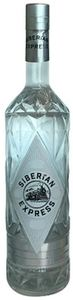

Trade Mark Journal No.2025/012 21 March 2025
WO0000001842988 (33)
Office of origin: Russian Federation

The declared designation “SIBERIAN EXPRESS” is a combined designation, representing a bottle with a relief pattern, On the front of the bottle there is a label pressed into a diamond-shaped relief with a pattern inside, In the center of the label there is a circle with the image of a stylized train, above and below which, as well as on the label of the neck of the bottle, there is a verbal element “SIBERIAN EXPRESS”, made in an original font in Latin, At the top of the second letter “I” of the word element “SIBERIAN” there is a figurative element in the form of a strip with a circle at the top, Below the diamond is a wide strip pressed into the relief, which shows a label with wavy edges, divided by stripes of dots into rectangles.
3 Dimensional
The mark contains the colours grey, black, blue and red.
- Class 33
- Aperitifs; arak [arrack]; bitters; brandy; wine; piquette; whisky; vodka; anisette [liqueur]; kirsch; hydromel [mead]; gin; digestifs [liqueurs and spirits]; alcoholic seltzers; cocktails; curacao; anise [liqueur]; liqueurs; peppermint liqueurs; makkoli; grain-based distilled alcoholic beverages; sugarcane-based alcoholic beverages; pre-mixed alcoholic beverages, other than beer-based; flavoured brewed alcoholic malt beverages, except beers; alcoholic beverages, except beer; alcoholic beverages containing fruit; wine-based beverages; spirits [beverages]; distilled beverages; rum; sake; perry; cider; soju; rice alcohol; alcoholic extracts; fruit extracts, alcoholic; alcoholic essences.
TRADELINE SOLUTIONS LTD.
Representative: Angelova Irina Borisovna, a/ia 117, g. Domodedovo, RU-142000 Moskovskaia obl., RUSSIAN FEDERATION